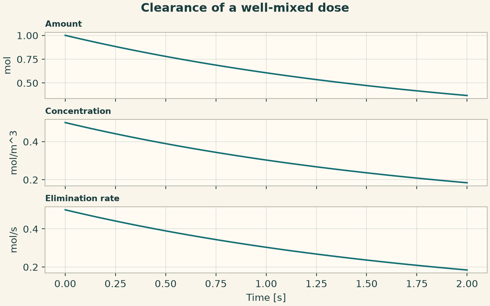
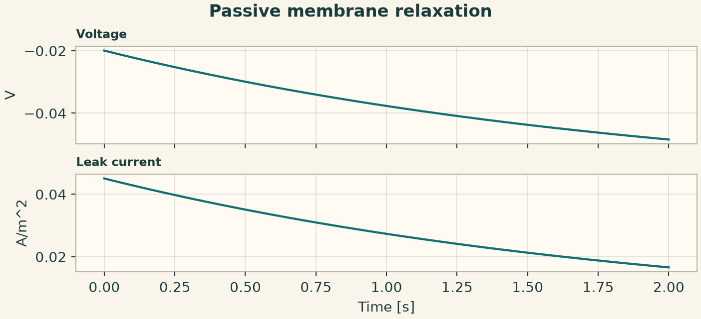
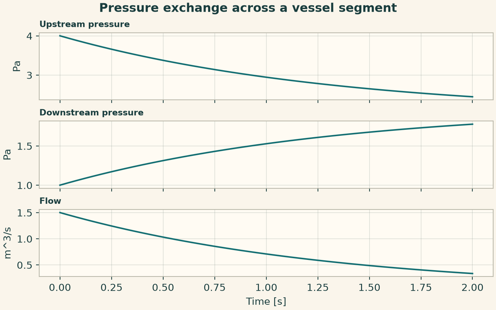
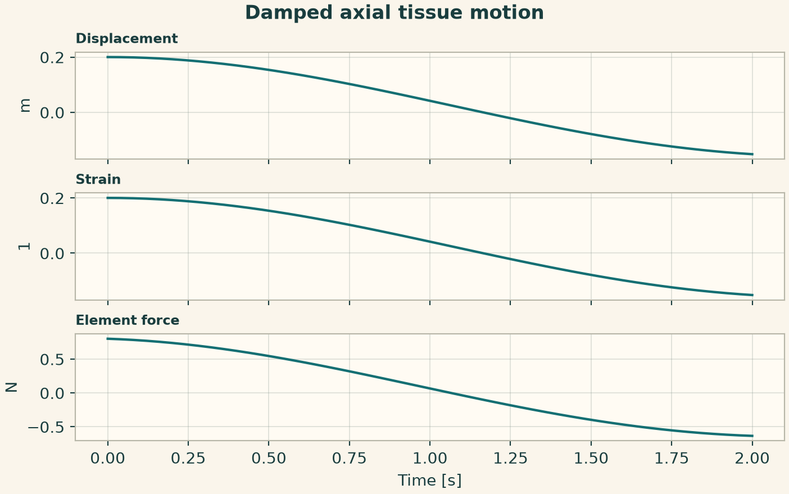
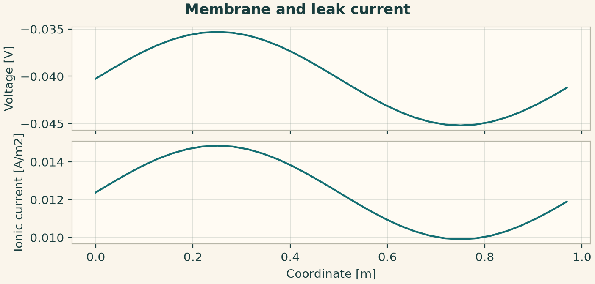
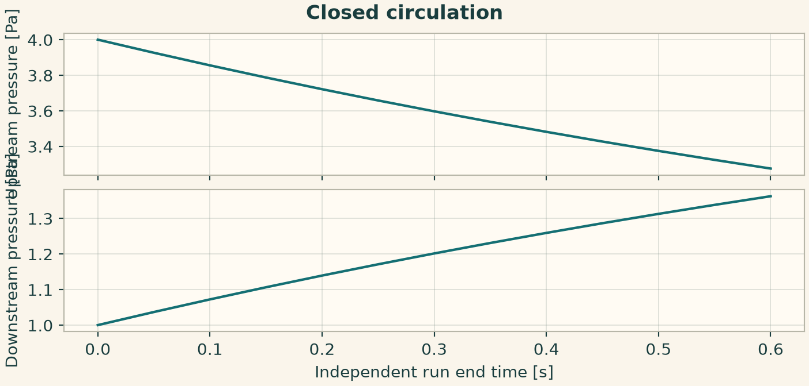
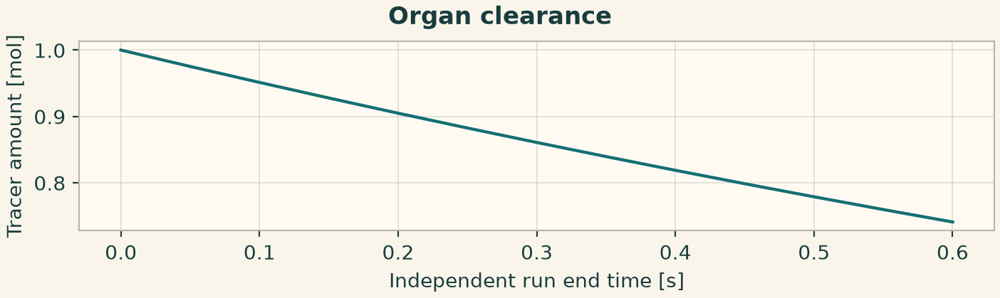
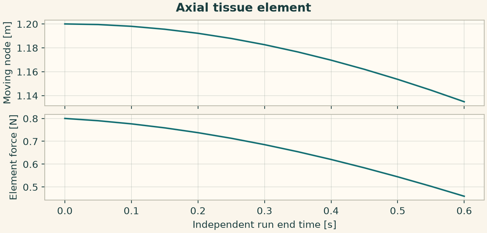
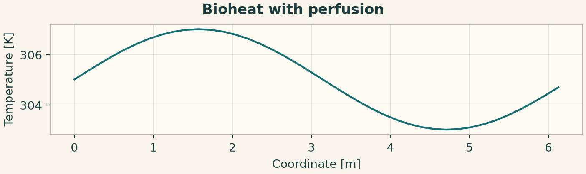

Docs › Worked physics and service recipes › Biophysics recipes
6.5 Biophysics recipes
This section includes the field-based declarations and the independently callable biophysics service configurations. The configuration keys in the service recipes belong to the indicated provider.
6.5.1 Clearance of a well-mixed dose
The initial amount is divided by the compartment volume to obtain concentration. With zero infusion, the amount decays at clearance divided by volume.
from onesim.physics.biophysics import OrganClearance
domain = LumpedDomain()
model = OrganClearance(
domain=domain.system,
volume=2,
clearance=1,
)
t, data = history_case(
domain,
model,
dict(amount=1.0),
("amount", "concentration", "elimination_rate"),
end=2,
dt=0.01,
)
np.testing.assert_allclose(data["amount"], np.exp(-t / 2), atol=1e-9)
fig = history_plot("Clearance of a well-mixed dose", model, t, data)
plt.show()

6.5.2 Passive membrane relaxation
A charged membrane relaxes toward its reversal potential. The voltage and signed leak current expose the capacitive and conductive parts of the balance.
from onesim.physics.biophysics import PassiveMembrane
domain = LumpedDomain()
model = PassiveMembrane(
domain=domain.system,
capacitance=2,
conductance=1,
reversal_potential=-0.065,
)
t, data = history_case(
domain,
model,
dict(voltage=-0.02),
("voltage", "leak_current"),
end=2,
dt=0.01,
)
np.testing.assert_allclose(
data["voltage"], -0.065 + 0.045 * np.exp(-t / 2), atol=1e-9
)
fig = history_plot("Passive membrane relaxation", model, t, data)
plt.show()

6.5.3 Pressure exchange across a vessel segment
Two compliances exchange fluid through a resistive segment. Their compliance-weighted pressure sum is constant without external flow.
from onesim.physics.biophysics import CompliantVessels, VesselSegment
domain = LumpedDomain()
model = CompliantVessels(
domain=domain.system,
upstream_compliance=1,
downstream_compliance=2,
vessel=VesselSegment("bridge", "up", "down", 2),
)
t, data = history_case(
domain,
model,
dict(upstream_pressure=4.0, downstream_pressure=1.0),
("upstream_pressure", "downstream_pressure", "flow"),
end=2,
dt=0.01,
)
np.testing.assert_allclose(
data["upstream_pressure"] + 2 * data["downstream_pressure"], 6.0
)
fig = history_plot("Pressure exchange across a vessel segment", model, t, data)
plt.show()

6.5.4 Damped axial tissue motion
An axial element stores and dissipates mechanical work. The mass displacement is the input to the tissue element strain and force calculation.
from onesim.physics.biophysics import AxialTissue, TissueElement
domain = LumpedDomain()
model = AxialTissue(
domain=domain.system,
mass=2,
element=TissueElement("fiber", 0, 1, stiffness=4, rest_length=1, damping=0.4),
)
t, data = history_case(
domain,
model,
dict(displacement=0.2, velocity=0.0),
("displacement", "strain", "element_force"),
end=2,
dt=0.01,
)
np.testing.assert_allclose(data["strain"], data["displacement"], atol=1e-12)
fig = history_plot("Damped axial tissue motion", model, t, data)
plt.show()

6.5.5 Bioelectrical provider with an explicit membrane state
The facade consumes a method-neutral initial-value problem and a separate numerical configuration. The state and ion list belong to the biophysical provider contract.
from onesim.physics.biophysics import (
BioelectricalConfiguration,
BioelectricalPublicApi,
)
from onesim.physics.biophysics.bioelectrical.models.bioelectrical_systems.state import (
BioelectricalState,
IonSpecies,
)
from onesim.simulation.problem_definition.declarations.physics.models.problem import (
InitialValueProblem,
)
x = np.linspace(0, 1, 32, endpoint=False)
problem = InitialValueProblem(
"Membrane with a leak",
"bioelectrical",
1,
BioelectricalState(voltage=-0.04 + 0.005 * np.sin(2 * np.pi * x)),
boundary_conditions=("periodic",),
)
configuration = BioelectricalConfiguration(
parameters=dict(
cell_count=len(x),
species=(IonSpecies("leak", 0.5, -0.065),),
diffusion=0.01,
final_time=0.02,
time_step=0.0005,
)
)
result = run_service(BioelectricalPublicApi(), configuration, problem)
fig = service_figure(
"Membrane and leak current",
x,
"Coordinate [m]",
("Voltage [V]", result.state.voltage),
("Ionic current [A/m2]", result.ionic_currents["leak"]),
)
plt.show()

6.5.6 Circulatory service with compartment pressures
Declare the network geometry as named compartment IDs and segment endpoints. The problem supplies the initial pressures and the configuration supplies compliances and resistance.
from onesim.physics.biophysics import (
CirculatoryConfiguration,
CirculatoryPublicApi,
VesselSegment,
)
from onesim.physics.biophysics.circulation.models.circulatory_systems.state import (
CirculatoryState,
)
from onesim.simulation.problem_definition.declarations.physics.models.problem import (
InitialValueProblem,
)
problem = InitialValueProblem(
"Closed circulation",
"circulation",
1,
CirculatoryState({"up": 4.0, "down": 1.0}),
boundary_conditions=("closed",),
)
t = np.linspace(0, 0.6, 13)
results = [
run_service(
CirculatoryPublicApi(),
CirculatoryConfiguration(
parameters=dict(
compliances={"up": 1.0, "down": 2.0},
segments=(VesselSegment("bridge", "up", "down", 2.0),),
final_time=float(end),
time_step=0.005,
)
),
problem,
)
for end in t
]
up = np.array([r.state.pressures["up"] for r in results])
down = np.array([r.state.pressures["down"] for r in results])
np.testing.assert_allclose(up + 2 * down, 6.0)
fig = service_figure(
"Closed circulation",
t,
"Independent run end time [s]",
("Upstream pressure [Pa]", up),
("Downstream pressure [Pa]", down),
)
plt.show()

6.5.7 Organ service with a species-specific clearance
The state indexes amounts by organ and species. Clearances are keyed by the same identifiers, and the result keeps both local concentrations and global amounts.
from onesim.physics.biophysics import OrganConfiguration, OrganPublicApi
from onesim.physics.biophysics.organs.models.organ_models.state import OrganState
from onesim.simulation.problem_definition.declarations.physics.models.problem import (
InitialValueProblem,
)
problem = InitialValueProblem(
"Clear a dose",
"organ",
1,
OrganState(("body",), ("tracer",), np.array([[1.0]])),
boundary_conditions=("closed",),
)
t = np.linspace(0, 0.6, 13)
results = [
run_service(
OrganPublicApi(),
OrganConfiguration(
parameters=dict(
volumes={"body": 2.0},
clearances={("body", "tracer"): 1.0},
final_time=float(end),
time_step=0.005,
)
),
problem,
)
for end in t
]
amount = np.array([r.total_amounts["tracer"] for r in results])
np.testing.assert_allclose(amount, np.exp(-t / 2), atol=1e-8)
fig = service_figure(
"Organ clearance",
t,
"Independent run end time [s]",
("Tracer amount [mol]", amount),
)
plt.show()

6.5.8 Tissue service with a fixed node and an axial element
Keep one node fixed and release a stretched element. Positions and velocities are node state. Force is an element diagnostic.
from onesim.physics.biophysics import (
TissueConfiguration,
TissuePublicApi,
TissueElement,
)
from onesim.physics.biophysics.tissue.models.tissue_mechanics.state import TissueState
from onesim.simulation.problem_definition.declarations.physics.models.problem import (
InitialValueProblem,
)
problem = InitialValueProblem(
"Axial tissue",
"tissue",
1,
TissueState(np.array([0.0, 1.2]), np.zeros(2)),
boundary_conditions=("fixed",),
)
t = np.linspace(0, 0.6, 13)
results = [
run_service(
TissuePublicApi(),
TissueConfiguration(
parameters=dict(
masses=(1.0, 2.0),
elements=(
TissueElement(
"fiber", 0, 1, stiffness=4, rest_length=1, damping=0.4
),
),
fixed_nodes=(0,),
final_time=float(end),
time_step=0.005,
)
),
problem,
)
for end in t
]
fig = service_figure(
"Axial tissue element",
t,
"Independent run end time [s]",
("Moving node [m]", [r.state.positions[1] for r in results]),
("Element force [N]", [r.element_forces["fiber"] for r in results]),
)
plt.show()

6.5.9 Bioheat provider with perfusion and an external source
Set the conductive and perfusion coefficients explicitly. The returned thermal profile is evaluated on the provider's line carrier.
from onesim.physics.biophysics import BioheatProvider
n = 40
x = np.linspace(0, 1, n, endpoint=False)
provider = BioheatProvider(
cell_count=n,
perfusion_capacity_rate=3e4,
blood_temperature=310.0,
external_heat=2e4,
initial_temperature=305.0 + 2 * np.sin(2 * np.pi * x),
final_time=0.4,
time_step=0.005,
)
result = provider.execute()
fig = service_figure(
"Bioheat with perfusion",
result.coordinates,
"Coordinate [m]",
("Temperature [K]", result.temperature),
)
plt.show()
